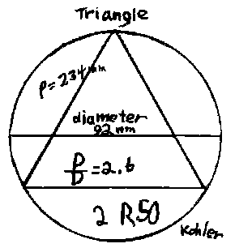
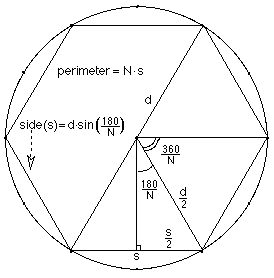

Kohler follows Archimedes
Kohler, a 5th grader at the time, started with a 12-dot circle. He drew the
circle, a diameter, and inscribed an equilateral triangle in it. He measured the
diameter of the circle and perimeter of the triangle in mm. He then found the
ratio of p/d. You try it. He
found the ratio of the perimeter of the polygon to the diameter of the cicle =
P/D= 234/92= 2.6

Notice, Kohler got 2 R50 and we had a big dicussion about leaving the answer as
a fraction and decimal, finally. He then did the same thing for a regular
hexagon, and regular dodecagon. You try it. What if you keep going, what's
happens to this ratio p/d?
Write a program to get the ratios of the perimeter of polygons of 3x2n sides
to the diameter (d) of the circle.
Kohler got the ratios p/d of 2.6, 3, and 3.1 for the 3-, 6- and 12-sided inscribed regular polygons. To generalize this ratio, let N = the # of sides of the polygon and since we are doubling the # of sides N = 3*2f, d= the diameter of the circle, and s = the length of one side of the polygon.

From the diagram at the right, sin(180/N) = s/2/d/2
and
s = d*sin(180/N) or in radians, s = d*sin(Pi/N).
A
program in Basic to get the first 10 ratios would be:
10 f = 0
20 N = 3*2f
30 Print N*sin(Pi/N)
40 f = f + 1
50 IF f>10 THEN STOP
60 GOTO 20
Running the program we get the infinite sequence 2.59807, 3, 3.1058, 3.1326,
3.1393, ... and after 10 loops, we get 3.14159... . Notice the first 3 are very
close to what Kohler had. And notice that we are correct to 5 places for Pi!
Received May 1993, with Kohler's
photo and Mansfield H.S. graduation announcement.
Mr. Cohen
Greetings from
I will be graduating June 5th as
valedictorian of my class. Through the Academy Program offered by the State
of
I am a National Merit Finalist
and am attending Ohio State Honors Program on a full academic scholarship.
Even though my math teachers
tried to put me down for my odd ways of performing math, I managed a 790 on my
Math SAT and am planning on majoring in both Math and Psychology.
I've always regretted having to
move away from your program but what you gave me really helped mold what I am
today.
Many thanks. I'm
sure our paths will cross again some day.
Thanks for your inspiration,
Kohler